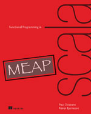

Errors Without Exceptions
Functional Programming in Scala
Created by Mark Perry, @mprry, G+, Blog, LinkedIn, GitHub, maperry78@yahoo.com.au
|  |  |
 |
Referential Transparency
- Terms can be replaced with definition without affecting behaviour
val x = "Hello, World"
val r1 = x.reverse
val r2 = x.reverse
val x = new StringBuilder("Hello")
val y = x.append(", World")
val r1 = y.toString
val r2 = y.toString
Exceptions break RT
def f1(i: Int): Int = {
val x: Int = throw new Exception("fail!")
try {
val y = i + 1
x + y
}
catch { case e: Exception => 2 }
}
Exceptions break RT (2)
def f1: Int = {
try {
f2(throw new Exception1(), throw new Exception2())
} catch (Exception1 e) {
-1
} catch (Exception2 e) {
-2
}
}
Exceptions and RT
- RT breaks when handling exceptions
- Uses implicit stack state
- Modelled using Continuations
Exception Alternatives
- Use a sentinel value
- Errors can propagate silently
- May be no valid sentinel
- Callers must know of special values, bad for reuse (HOF)
- Force caller to give default value
- Immediate callers must have default
- Need to defer decision
Option Data Type
- Need type that sometimes has a value
- Convert function from partial to total
sealed trait Option[+A]
case class Some[+A](get: A) extends Option[A]
case object None extends Option[Nothing]
def mean(xs: Seq[Double]): Option[Double] =
if (xs.isEmpty) None
else Some(xs.sum / xs.length)
Option Usage Patterns
- Examples: Map lookup, first/last in list
- Factor out common error handling
trait Option[+A] {
def map[B](f: A => B): Option[B]
def flatMap[B](f: A => Option[B]): Option[B]
def getOrElse[B >: A](default: => B): B
def orElse[B >: A](ob: => Option[B]): Option[B]
def filter(f: A => Boolean): Option[A]
}
Example
case class Employee(name: String, department: String)
val employeesByName: Map[String, Employee] = ???
val joeDept: String =
employeesByName.get("Joe").
map(_.dept).
filter(_ != "Accounting").
getOrElse("Default Dept")
public String getJoeDept() {
String defaultDept = "Default Dept"
String key = "Joe"
if (!employeesByName.hasKey(key)) {
return defaultDept
} else {
Department dept = employeesByName.get(key).getDepartment()
return dept == "Accounting" ? dept : defaultDept
}
}
Composition and Lifting
- Does Option pollute entire codebase?
- Map lifts ordinary functions into Option
- Turns A => B into Option[A] => Option[B]
def lift[A,B](f: A => B): Option[A] => Option[B] = _ map f
Properties Files
def stringProperty(p: Properties, key: String): Option[String] = {
Option(p).map(_.getProperty(key))
}
def intProperty1(p: Properties, key: String): Option[Int] = {
stringProperty(p, key).map(_.toInt)
}
def sToInt(s: String): Option[Int] = ???
def intProperty2(p: Properties, key: String): Option[Int] = {
stringProperty(p, key).flatMap(sToInt(_))
}
def map[B](f: A => B): Option[B]
def flatMap[B](f: A => Option[B]): Option[B]
Lift Example
- Methods on Pattern don't need to know about Option!
Option getStringProperty(Properties p, String key) {
Option.fromNull(p.getProperty(key))
}
import java.util.regex._
def pattern(s: String): Option[Pattern] =
try {
Some(Pattern.compile(s))
} catch {
case e: PatternSyntaxException => None
}
def mkMatcher(pat: String): Option[String => Boolean] =
pattern(pat) map (p => (s: String) => p.matcher(s).matches)
Lifting Using For Comprehension
def mkMatcher_1(pat: String): Option[String => Boolean] =
for {
p <- pattern(pat)
} yield ((s: String) => p.matcher(s).matches)
def doesMatch(pat: String, s: String): Option[Boolean] =
for {
p <- mkMatcher_1(pat)
} yield p(s)
Lifting Two Arguments
def bothMatch(pat: String, pat2: String, s: String): Option[Boolean] =
for {
f <- mkMatcher(pat)
g <- mkMatcher(pat2)
} yield f(s) && g(s)
def bothMatch_1(pat: String, pat2: String, s: String): Option[Boolean] =
mkMatcher(pat) flatMap (f =>
mkMatcher(pat2) map (g =>
f(s) && g(s)))
Exercises
- Write a generic function , that combines two values using a binary function
def map2[A,B,C](a: Option[A], b: Option[B])(f: (A, B) => C): Option[C]
def bothMatch_2(pat1: String, pat2: String, s: String): Option[Boolean]
def sequence[A](a: List[Option[A]]): Option[List[A]]
def parsePatterns(a: List[String]): Option[List[Pattern]] =
sequence(a map pattern)
def traverse[A, B](a: List[A])(f: A => Option[B]): Option[List[B]]
Either
- Option too simplistic,
- Either gives a reason for failutre
- Disjoint union of two types
- By convention, left is failure, right is "correct/right"
sealed trait Either[+E, +A]
case class Left[+E](value: E) extends Either[E, Nothing]
case class Right[+A](value: A) extends Either[Nothing, A]
def safeDiv(x: Double, y: Double): Either[Exception, Double] =
try {
Right(x / y)
} catch {
case e: Exception => Left(e)
}
trait Either[+E, +A] {
def map[B](f: A => B): Either[E, B]
def flatMap[EE >: E, B](f: A => Either[EE, B]): Either[EE, B]
def orElse[EE >: E,B >: A](b: => Either[EE, B]): Either[EE, B]
def map2[EE >: E, B, C](b: Either[EE, B])(f: (A, B) => C): Either[EE, C]
}
Conclusion
- Using ADT, errors are modular, compositional and simple to reason about
- Higher Order Functions can manipulate errors